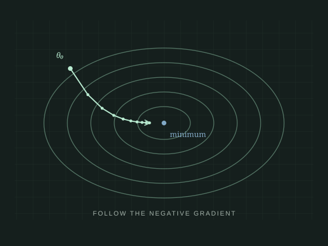
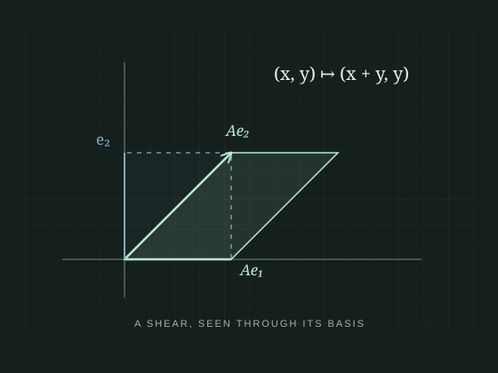

01 / MACHINE LEARNING
This collection sketches the visual language we are developing for Agent: neural network structure, the geometry of optimization, and transformations in linear algebra. These original, static concept previews establish a direction for future Manim renders; they are not outputs from a working agent. The first benchmark will explain forward propagation and backpropagation, with publication figures as the primary deliverable and 1080p video and GIF exports alongside them.

